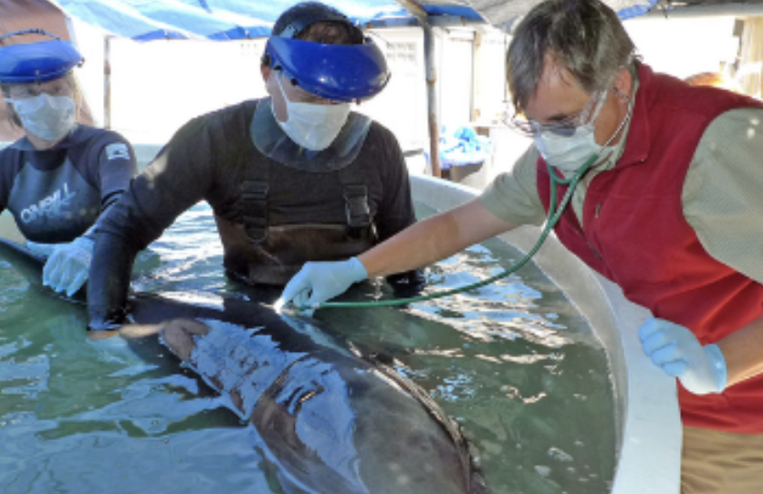
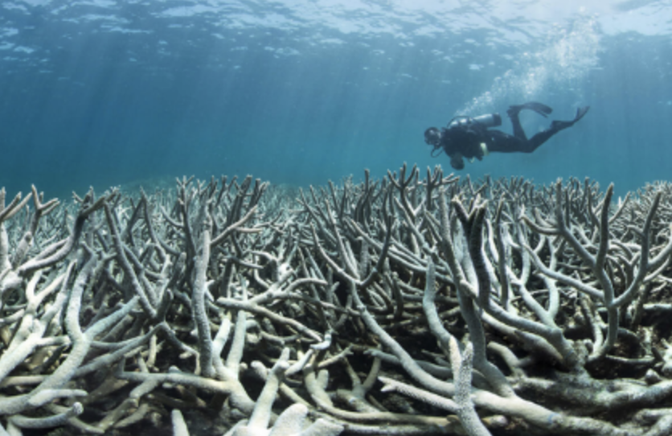
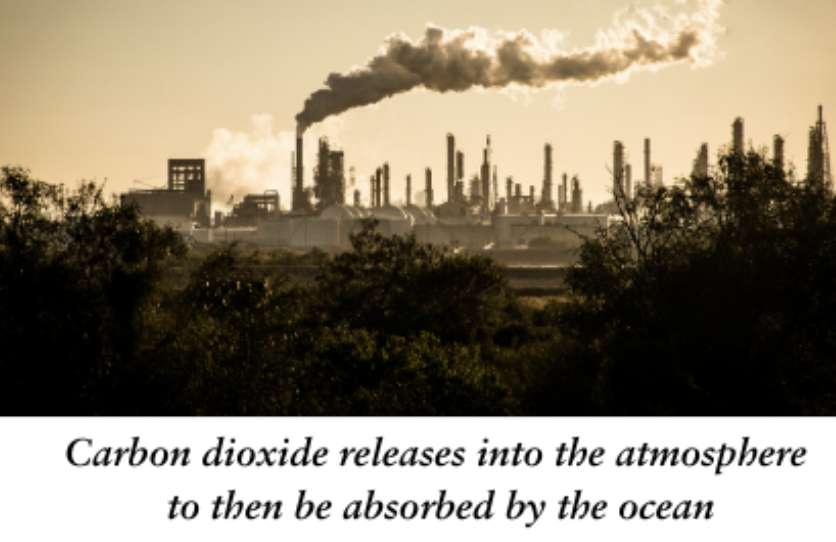
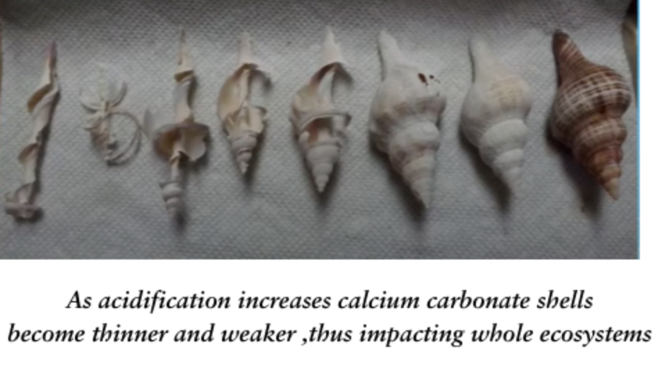

Career Pathways

Marine biologists can pursue various specializations based on their
interests. Some focus on marine ecology, studying species interactions
and ecosystem functions, while others delve into fields like fisheries
biology, marine genetics, or microbiology. Marine biotechnology
explores applications of marine organisms in medicine and renewable
energy, while marine toxicology investigates the effects of pollutants
on aquatic life. Conservation biology, a critical subfield, is
dedicated to protecting marine biodiversity by identifying threats and
developing sustainable management practices.
Certifications
Certifications and credentials also enhance career prospects. For
instance, the American Academy of Underwater Sciences (AAUS)
Scientific Diver Certification ensures safety and competence in
underwater research. Certifications like the Certified Fisheries
Professional (CFP) or Certified Wildlife Biologist (CWB) validate
expertise in specialized fields such as fisheries science or marine
wildlife. Dive certifications, such as the PADI Dive Master
credential, are advantageous for safely conducting fieldwork in
aquatic environments.
Typical earning potential
The salary of marine biologists varies depending on their location,
level of expertise, and specific roles.
In Canada
According to the Government of Canada (updated December 3, 2024),
marine biologists earn between $25.00/hour and $61.54/hour nationwide,
with a median of $40.00/hour. Salaries vary significantly across
provinces and territories, with Northwest territories earning highest
at $78.85/hour and Prince Edward Island having the lowest $ 44.62
/hour
In the U.S
According to Indeed (updated January 4, 2025), U.S. marine biologists
have annual salaries ranging from $40,080 to $73,026, with an average
of $54,101.
Salaries tend to be higher in regions where marine biology expertise
is in greater demand or where the cost of living is elevated, such as
the northern territories in Canada and coastal states in the U.S.
Additionally, advanced certifications, specializations, and experience
can significantly increase earning potential.
Equilibrium in marine biology

Chemical equilibrium plays a crucial role in the balance of marine
ecosystems. For marine biologists, understanding how shifts in
equilibrium affect ocean chemistry is essential, particularly in the
context of ocean acidification. This phenomenon, driven by increasing
atmospheric carbon dioxide (COz), disrupts the natural equilibrium of
carbonate chemistry in seawater, with significant consequences for
calcifying organisms. When COz is absorbed by seawater, it
participates in a series of reversible chemical reactions creating a
dynamic equilibrium
Calcification Process
Calcifying organisms combine calcium ions (Ca²⁺) and carbonate ions
(CO₃²⁻) to form calcium carbonate (CaCO₃):
Ca²⁺ + CO₃²⁻ → CaCO₃
As ocean acidity increases, the equilibrium in the carbonate system
shifts to the side that produces more bicarbonate ions (HCO₃⁻) and
free hydrogen ions (H⁺), reducing the availability of carbonate ions
(CO₃²⁻). This shift occurs due to Le Chatelier's Principle, which
states that a system at equilibrium will adjust to counteract changes
in conditions.
When atmospheric CO₂ dissolves into seawater, it forms dissolved
carbon dioxide (CO₂(aq)), which reacts with water to produce carbonic
acid (H₂CO₃). This carbonic acid dissociates into bicarbonate ions
(HCO₃⁻) and hydrogen ions (H⁺). The presence of excess hydrogen ions
shifts the equilibrium further, encouraging the formation of more
bicarbonate at the expense of carbonate ions. This process diminishes
the availability of carbonate ions (CO₃²⁻), which are essential for
calcifying organisms to build calcium carbonate (CaCO₃) shells and
skeletons. As a result, the equilibrium adjustments driven by
increased acidity directly impact the capacity of marine organisms to
maintain their structural integrity, leading to significant ecological
consequences.
The reduction in available carbonate ions directly impacts
calcification, making it increasingly difficult for organisms such as
corals, mollusks, and pteropods to build and maintain calcium
carbonate structures. This can have broader impacts in food webs as
animals like pteropods are the main source of food for whales and
other filter feeders.
The reduced calcification also affects reef-building, which is vital
for biodiversity and coastal protection, as coral reefs serve as
nurseries for many marine species. Furthermore, ocean acidification
impairs the sensory functions of larval fish, such as their ability to
detect predators, significantly reducing their survival rates.
Marine biologists monitor these chemical shifts and study the
resilience of marine species. Mitigating acidification requires global
efforts to reduce CO₂ emissions and explore localized solutions, such
as growing seaweed to absorb CO₂. Understanding the chemical
equilibrium that governs ocean acidity is critical to preserving
marine ecosystems and the services they provide to humanity.

